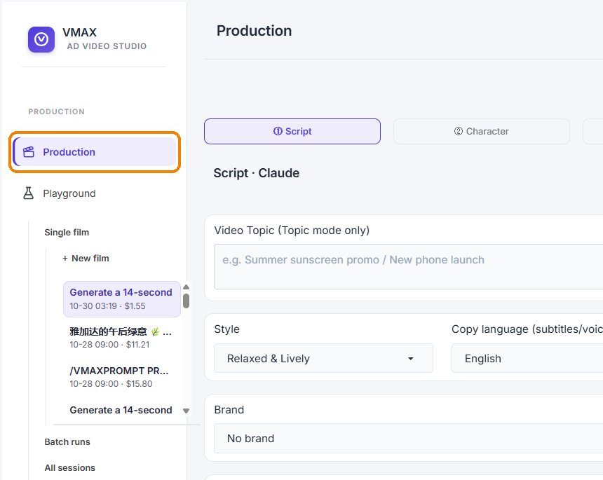
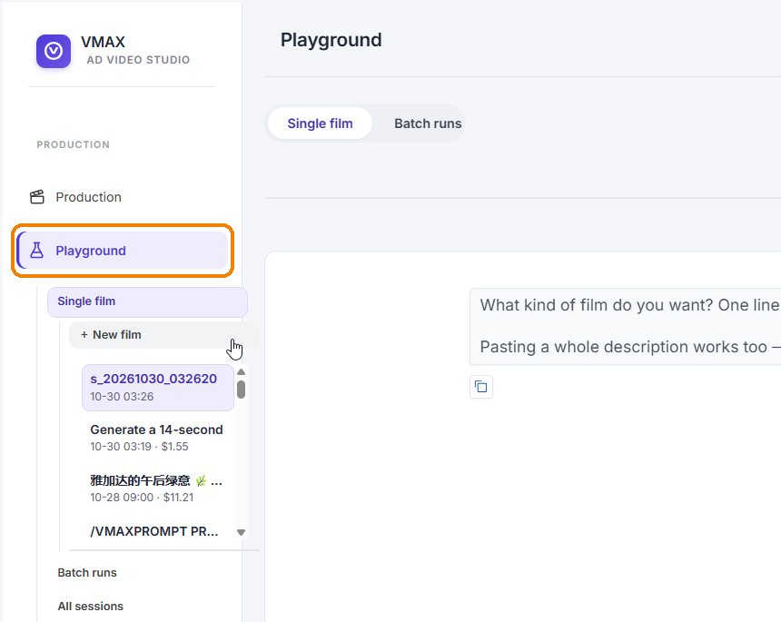
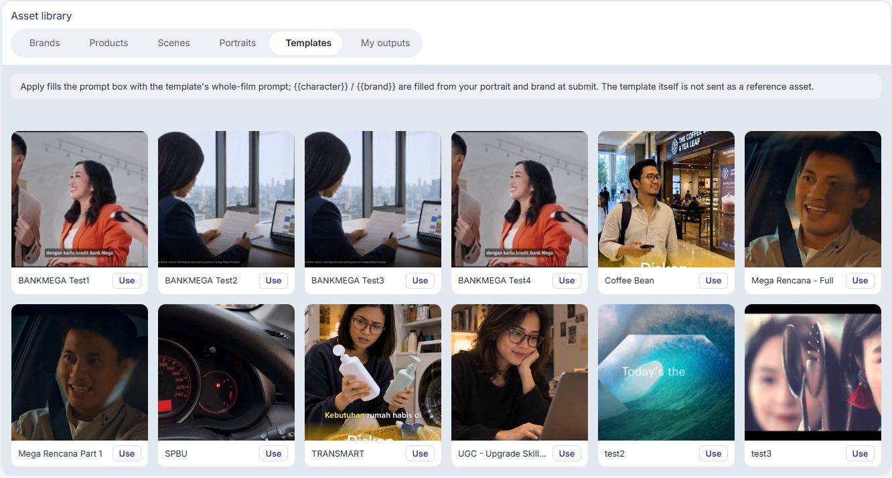
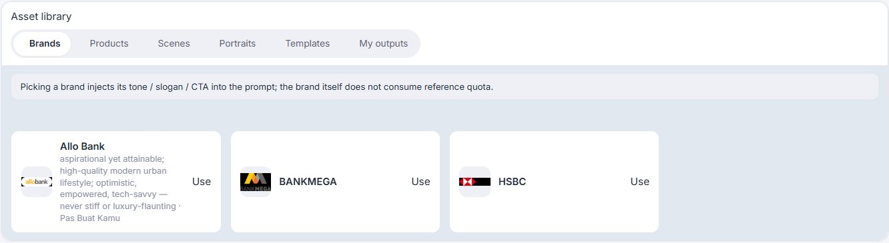
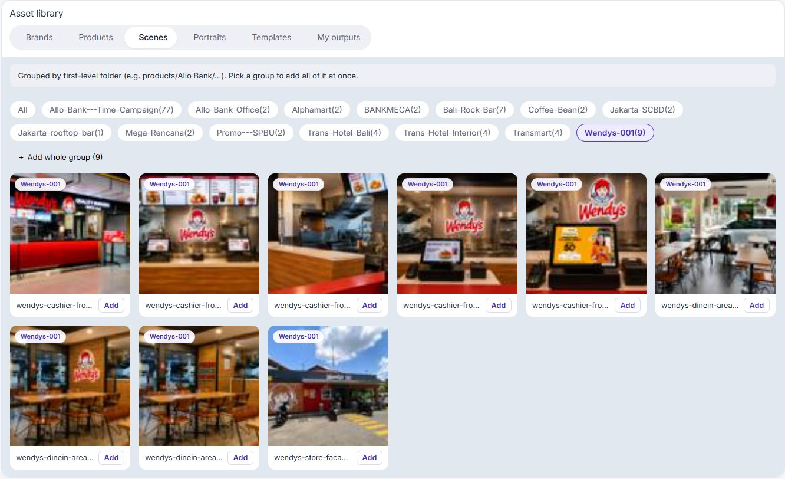
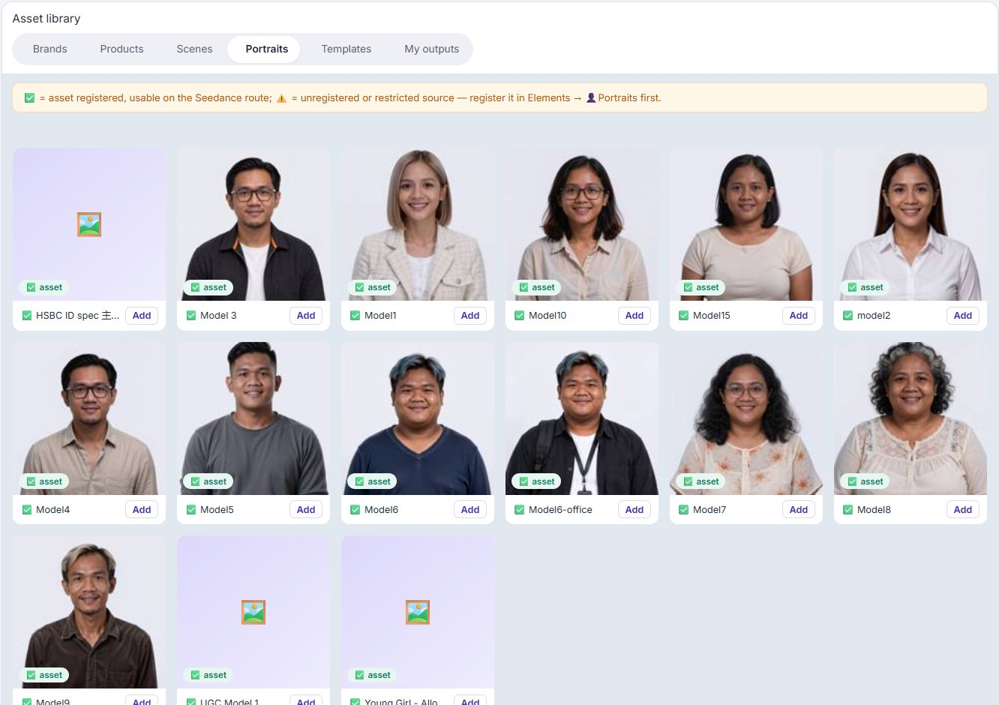
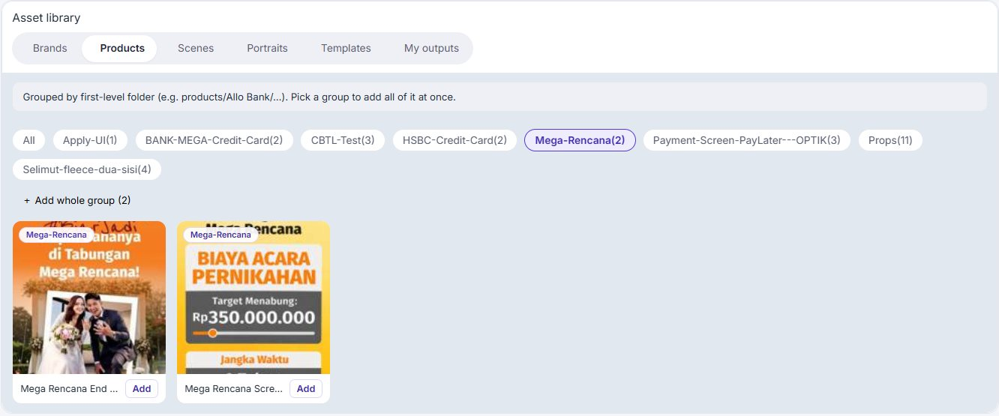
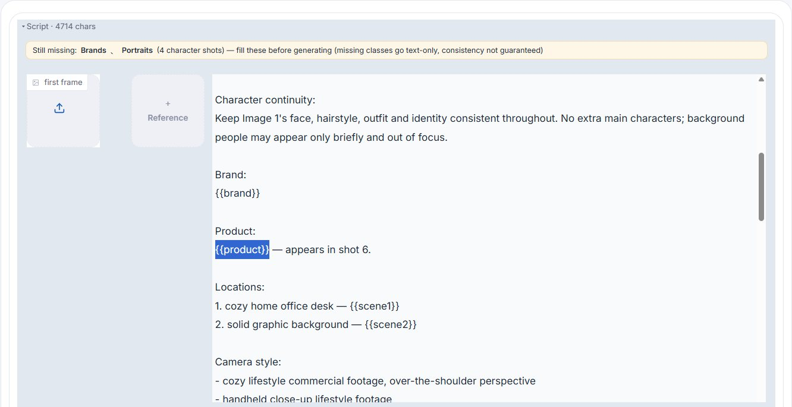
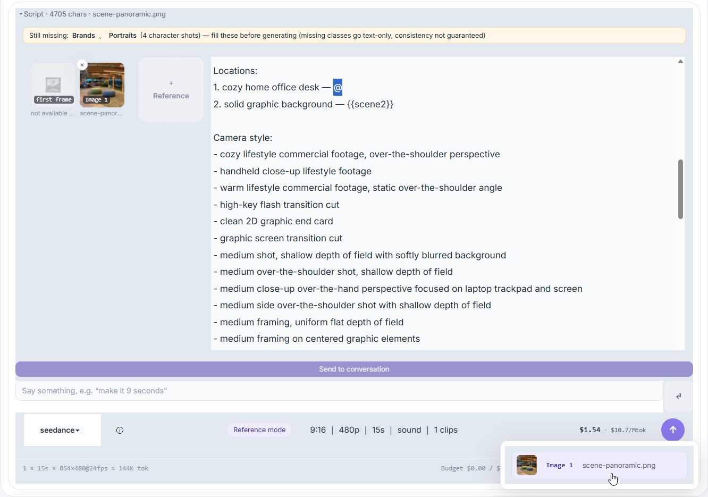

Documentation
Getting started
Sign in with your account. The header shows your account, your points balance and a Test Mode switch. Choose Production to build an ad from scratch, or Playground to copy a reference video with changes. Finished videos appear under My outputs and in Task Manager.
Production
Production is a five-step flow. Progress is shown at the top.

Open Production
In the VMax dashboard, select Production in the left sidebar. The Script step opens, with progress shown at the top.

1. Script
Enter a topic, then choose a style, the copy language for subtitles and voiceover, a duration from 5 to 30 seconds, a brand, an audience segment and an optional structural template. Select Generate Script (AI), edit it, then Confirm Script, Next.

2. Character
Search the character library and select a card, or edit the character description. Check the face close-up and 3-view sheet, then confirm.

3. Scene Studio
The storyboard lists every scene with its text, keywords, visual prompt, shot role and overlay text. Double-click a cell to edit. Select AI Scene Descriptions and the AI writes the visual prompts. Generation settings (ratio, quality tier, resolution, sharpness, negative prompt) apply to the whole batch.

Scene cards
Each scene card runs prompt, then image, then video, and regenerating one scene leaves the others alone. Use Rewrite from assets after attaching a product, scene or character reference, Generate scene image for the first frame (or upload your own), then Generate scene video. Shot roles such as establishing, character, ui_closeup and cta suggest which references to attach. Finish with Confirm Storyboard, Next.
4. AI Voice
Choose the voice, tone and language (ElevenLabs).
5. Compose
Assembles the clips you already generated into the final video.
Playground
Playground copies an uploaded video and creates a similar one with slight modifications. Each film is a session, and the sidebar lists sessions with their total cost. One session can produce several videos, and each one costs credits.

1. Open Playground
In the VMax dashboard, select Playground in the left sidebar, then choose Single film and select New film to start a session. The sidebar also lists your earlier sessions.
Prompt and references

2. Choose a video template
Open the Templates tab in the Asset library. It lists the videos you have previously uploaded. Select Use on the one you want. Use fills the prompt box with the template's whole-film prompt. The template itself is not sent as a reference asset.

3. Choose your brand
Open the Brands tab and select Use on your brand. Picking a brand injects its tone, slogan and CTA into the prompt. The brand does not use up reference quota.

4. Choose your scene locations
Open the Scenes tab. Scenes are grouped by folder. Select Add on a single image, or pick a group and select Add whole group to add all of it at once.

5. Choose your characters
Open the Portraits tab and select Add on a character. A green check means the asset is registered and can be used on the Seedance route. A warning icon means it is unregistered or restricted, so register it in Elements, then Portraits, first.

6. Choose your products (for the screen UI)
Open the Products tab and select the group that holds the app screen UI, then select Add on the screens you want to appear in the video.

7. Replace the placeholders in the script
The script contains placeholders such as {{brand}}, {{product}}, {{scene1}} and {{scene2}}. Select a placeholder in the script. A notice above the script lists any asset types you have not chosen yet, so fill these before you generate.

Mention the chosen asset
With the placeholder selected, type @. A list of the assets you chose in the previous steps appears, for example Image 1. Select the asset and it replaces the placeholder and is read as a reference.

Video specification
Set the model (Seedance), reference mode, aspect ratio, resolution, duration, sound and number of clips. Background music can be none, a library track or an AI-generated score, and an audio reference can drive pacing. The estimated cost shows before you generate.

Sessions and batch runs
All sessions lists everything made in Playground. Batch runs generate many single films at once; this can use more credits and the results often drift from your plan.
Asset library
- Brands: set up first in Element Manager.
- Products: mostly mobile screen UI mockups or replacements, used as prompt ingredients.
- Scenes: locations used as prompt ingredients.
- Portraits: characters used as prompt ingredients. A green check means the asset is registered and usable with Seedance.
- Templates: videos uploaded and parsed into a prompt. Use one to make a similar video, and edit the parsed prompt with any elements. {{character}} and {{brand}} are filled in when you submit.
- My outputs: videos successfully generated from Production and Playground.


Element Manager
Manage the building blocks: Brands, Products, Scenes, My outputs, Templates, Transition Elements, Audio Elements, Characters and Model looks. A brand holds its colors, slogan, tone keywords, logo, legal line, CTA, campaigns and audience personas. Turn on Publish to end users to let users from other accounts access the brand.


Characters
VMax characters come from the Seedance Digital Characters library, because Seedance does not accept arbitrary human faces. To add one:
- Copy its Seedance asset ID.
- Paste its biography into VMax and adjust it if needed.
- Upload its static photo.
- Generate the 3-view sheet. VMax offers three options based on the biography.
- Select Save character. It is now available in Production and Playground.
To use a real person, get their consent for the use of their likeness first.

Video Editing
A plug-in editor for finished videos. Upload local videos or pick outputs from Production or Playground; several clips are joined in order. Set transition times, then choose a logo, transitions and background music from the library, and set the music volume. Generate Ad Video renders 16:9, 1:1 and 9:16 versions together. No earlier steps are needed.

Task Manager and MAX
Task Manager lists past projects by creator and status. Preview a task or Load project to reopen it. MAX is an AI tool that optimizes Google Ads, Meta Ads and TikTok Ads. Choose an ad account and a placement (campaign or ad group), then Push to MAX to send creatives to its library, ready to use as ads.
Audit and Settings
Audit (Operations and Spend) shows spend against the daily budget, totals by provider and a log of every operation with its cost, duration and status. Export it as CSV. Settings holds provider choices for scripts, video and images, voiceover and digital avatars. Keys are managed by your organization’s admin.
End users and AI twins
VMax can be embedded in other products, such as AIM (Allo Bank Influencer Market). People there are called end users. They use the account’s credits and make videos from the brands and templates you publish. To make an AI twin, an end user consents, uploads a few selfies and picks a look from Model looks. The face stays the same while the outfit and background follow the template.
Costs and points
Every session shows its total cost, and Playground estimates the cost before you generate. The points (pts) balance in the header is not active yet. Top-ups will fund points through an AI credit system later.